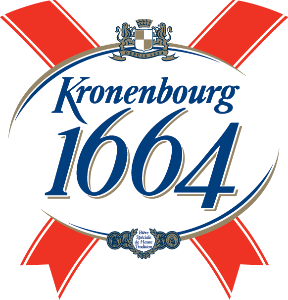

Beer Info
1664 Blanc is a light and refreshing wheat beer, with a layered taste profile. Its unique flavour comes from the perfect harmony of its two distinct dimensions.
A lively, crisp and refreshing wheat beer, bursting with citrus notes, exotic fruits and a touch of spice.
Type of beer
European Lager
ABV
5.5%
Glass
Pint